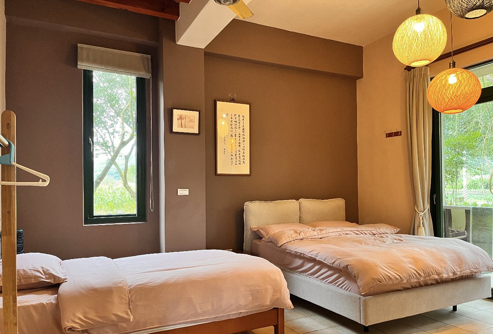
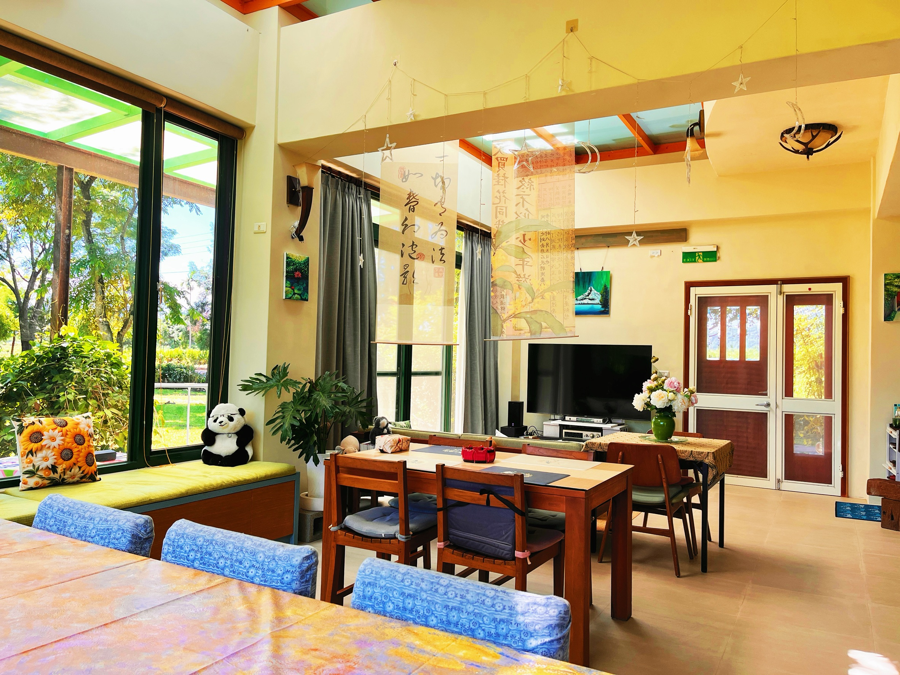
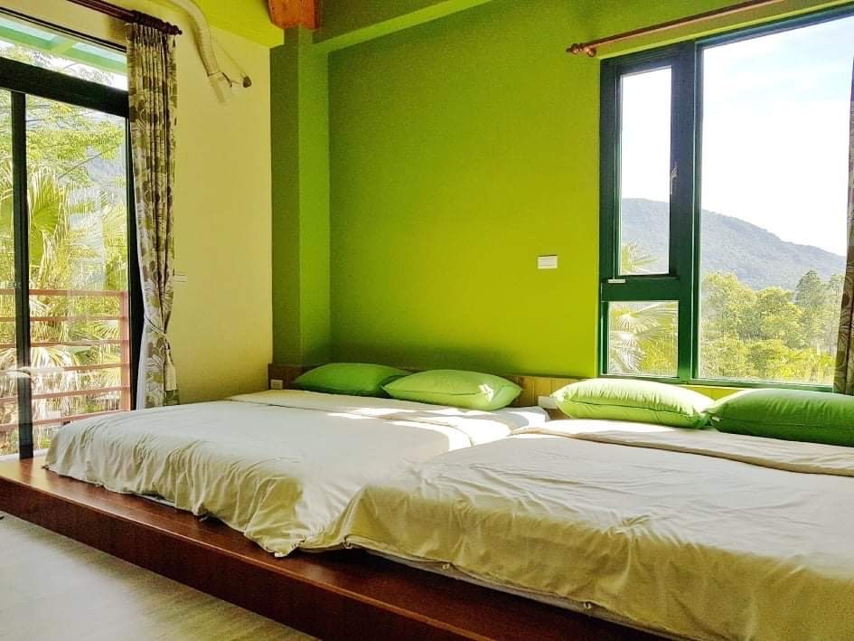
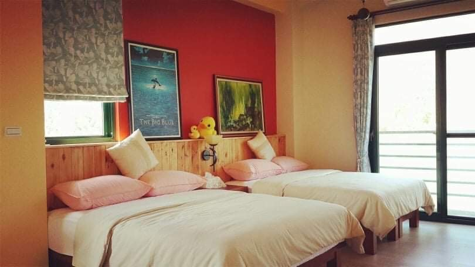
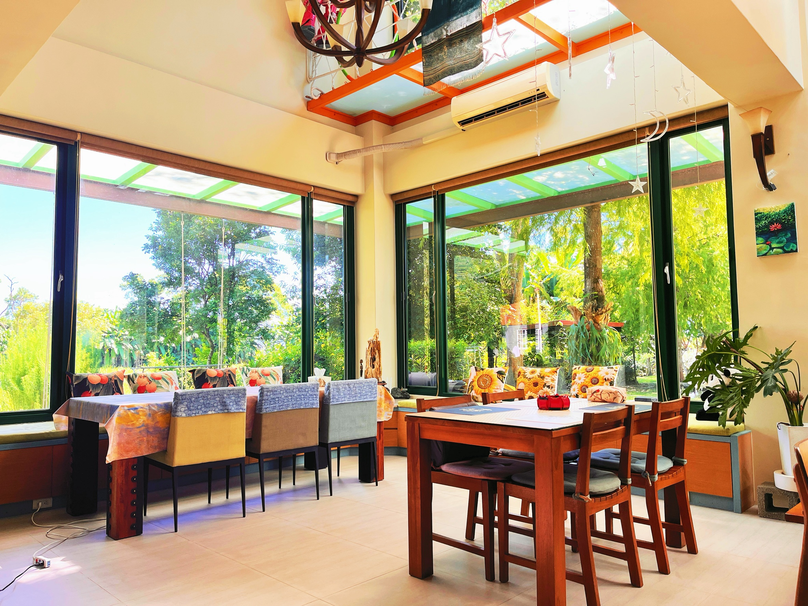
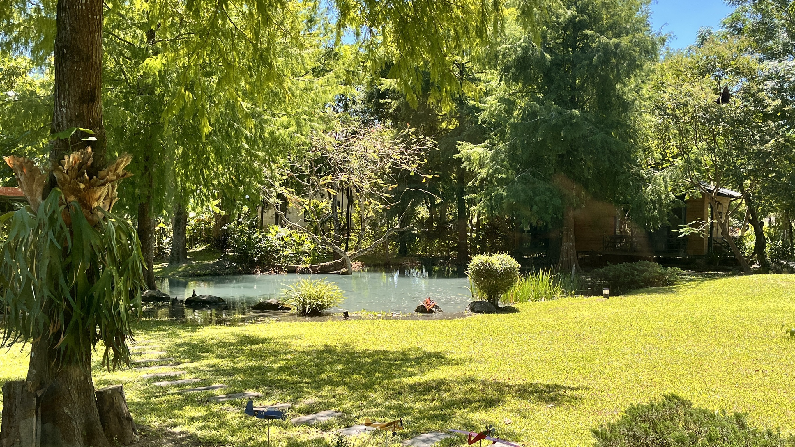

雲絲帶
位於一樓，禪風木質空間。落地窗外是山遇的庭園綠意。
HUALIEN · SHOUFENG · MAIN BUILDING
把一家人的旅行聚在一起。三間各有風景的房，住進山腳下的家園，留一段時間相處、吃早餐、看看庭園。
主棟包棟不含獨立小木屋。空房與入住安排由主人確認。

THREE ROOMS · ONE TRIP
包棟包含以下三間房：雲絲帶 3 人、里哈籟最多 4 人、山遇真情 4 人。合計 5 張雙人床與 1 張單人床。

位於一樓，禪風木質空間。落地窗外是山遇的庭園綠意。

輕鬆自在的綠野風格，與家人分享山間的日常。

溫暖的親子家族房，透過窗景看見中央山脈。
想看更多房內角度？回首頁查看完整房間照片 →
TIME TOGETHER
主棟的木質餐廳與窗邊角落，是這趟旅行的共同背景。戶外還有庭園、生態池與草地，照片皆為莊園實景。


RATES & RESERVATION
週末、連假與指定日期適用房價，請與主人確認。
BEFORE YOUR STAY
主棟包棟包含雲絲帶、里哈籟、山遇真情三間房，共 11 人，不含水見曉逐獨棟木屋。需要木屋可另行詢問空房。
住宿含次日早餐。若有飲食需求，請於預約時先與主人討論。
請在付款前透過 LINE 確認入住日期的房價、加人安排、訂金及取消／改期條件，確認後再匯款，並保留雙方確認的內容。
可停於民宿庭院空地或門口；抵達時請依主人指引停放，多車同行請先告知。寵物同行請於預訂前詢問主人，確認安排後再付款。
花蓮縣壽豐鄉豐山村和平街 8 號，鄰近豐田車站。開啟 Google 地圖導航 →